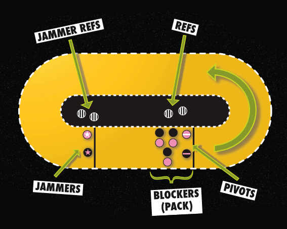

Gameplay

Roller Derby Lingo:
- Bout: The match. Composed of 2 teams fighting to score points.
- Jam: The individual sessions of play. May last up to 2 minutes.
- Jammer: The point scorer. Designated by a star on the helmet.
- Blocker: The defensive players. They form the Pack.
- Pivot: The lead Blocker. At the head of the Pack, they designate speed and communicate with their teammates. Designated by a stripe on the helmet.
How the game is played:
- A Roller Derby Bout is played in two 30 minute periods broken into Jams. In each Jam the two teams put 5 players on the track: 1 Jammer, 3 Blockers, and 1 Pivot. At the beginning of the Jam the Blockers and Pivots line up together and form what is known as the Pack. The Jammers start 30 feet behind the Pack.
- At the whistle signaling the start of the jam, the Pack begins skating. When the Pack crosses the Pivot Line, the whistle blows again and the Jammers are off. The goal of the Pack is to prevent the opposing team's Jammer from navigating through the pack while assisting their own Jammer.
- The goal of the Jammer is to break through the pack in order to score points for his or her team. After a Jammer has successfully broken through the Pack the first time (the initial pass), he or she skates around the track to catch up with the pack and break through again. All passes after the first are scoring passes.
- The first Jammer to pass through the pack cleanly is awarded "Lead Jammer" status. This Jammer may call of the Jam at any point. Lead Jammer status is retained for the entirety of the Jam. If neither Jammer is able to pass through cleanly, there is no Lead Jammer and the Jam will be played for a full 2 minutes.
- Points are scored for each opposing player the Jammer passes after the initial pass. A Jammer only receives one point per opponent in a pass no matter how many times they might pass that opponent during the pass. Points accumulate in this fashion for the duration of the Jam.
- Players are allowed to check members of the opposing team using their shoulders and hips into the front and side of their target. Pushing, tripping, blocking from behind and hitting with any part of the arm from the elbow down are all illegal and may result in Penalties.
- If four minor Penalties are assessed on a given player, that player will be sent off the track for 1 minute. Players can be removed immediately for major offenses such as fighting or gross misconduct or other actions which have a major effect on the game.
- At the end of the second period, the team with the most points is declared the winner. Skaters from the victorious team are required to perform several victory laps during which they will pump their fists in the air and/or blow kisses to the cheering crowd.
- After beating the daylights out of each other, it's customary for players to shake hands.